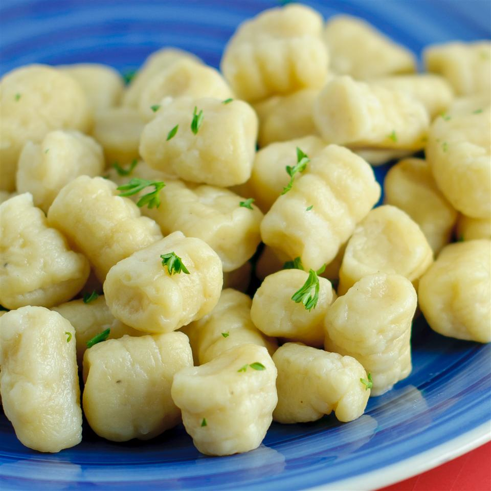

Gnocchi

What is it?
Gnocchi (pronounced NYOW-kee) are an Italian pasta, the most common of which is classic potato gnocchi (Gnocchi di patate).
They are made of cooked mashed potatoes, flour and eggs.
Some gnocchi recipes add ricotta to the dough. "Gnocchi" is the plural for "gnoccho," (which you rarely hear, perhaps because who can eat just one?).
Because of their shape - small squat shells with ripples - gnocchi are especially good for thick sauces
but they're also delicious just drizzled generously with brown butter and a little sage, or with a creamy gorgonzola sauce.
Ingredients:
- 1 egg
- 2 potatoes
- 2 cups all-purpose flour
Steps:
- Bring a large pot of salted water to a boil. Peel potatoes and add to pot. Cook until tender but still firm, about 15 minutes. Drain, cool and mash with a fork or potato masher.
- Combine 1 cup mashed potato, flour and egg in a large bowl. Knead until dough forms a ball. Shape small portions of the dough into long "snakes". On a floured surface, cut snakes into half-inch pieces.
- Bring a large pot of lightly salted water to a boil. Drop in gnocchi and cook for 3 to 5 minutes or until gnocchi have risen to the top; drain and serve.